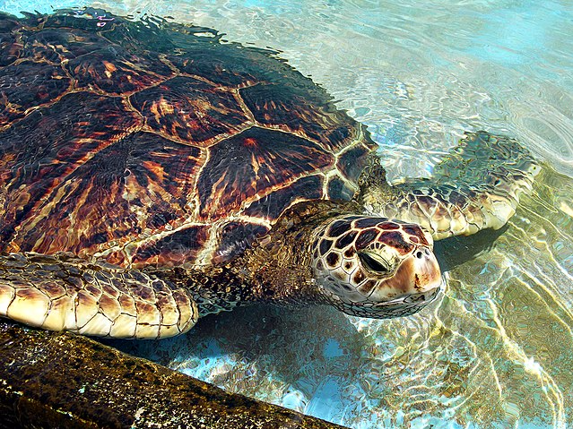
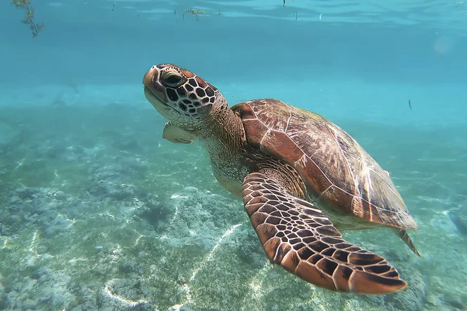
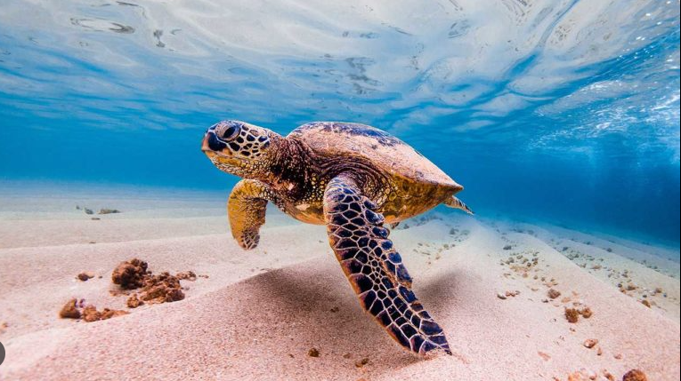
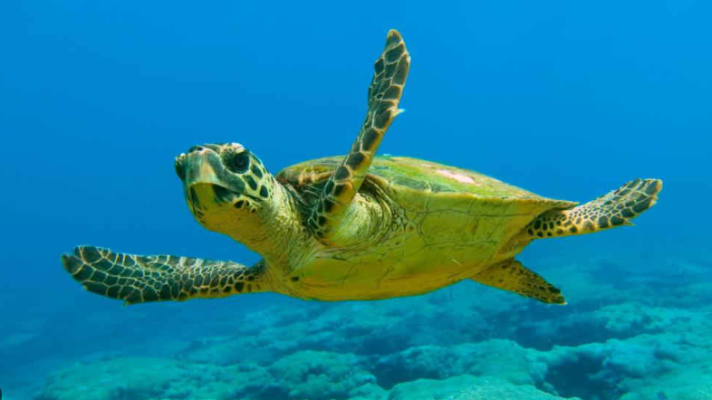
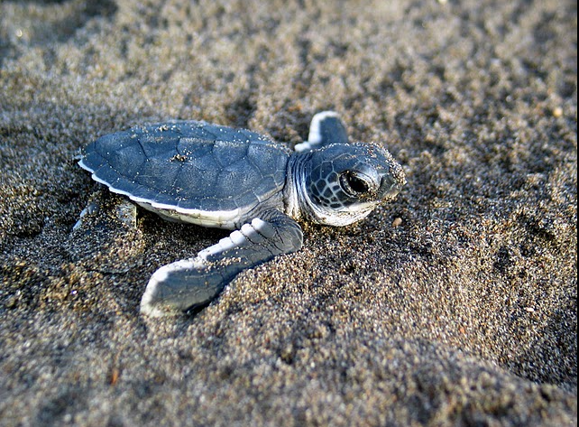
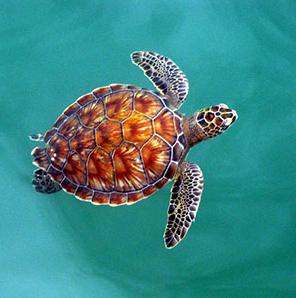

Las tortugas marinas son reptiles marinos que han existido en la Tierra durante millones de años. Son conocidas por su impresionante migración a través de los océanos y su papel crucial en los ecosistemas marinos.
 Existen varias especies de tortugas marinas, incluyendo la tortuga verde, la tortuga laúd, la tortuga boba y la tortuga carey. Cada especie tiene características únicas y es importante para la biodiversidad marina.
 A pesar de su resistencia, las tortugas marinas enfrentan numerosas amenazas, como la contaminación, la pesca incidental y la degradación de su hábitat. Se están realizando esfuerzos de conservación en todo el mundo para proteger a estas fascinantes criaturas.
 Página practica hecha por Daniel Becerra y Jean Guzmán :D